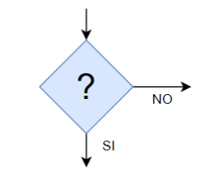
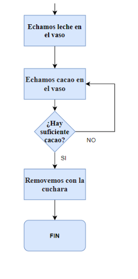

Diferencia o desigualdad de una cosa respecto a otra.
Ejemplo
Hubo disparidad de opiniones.
D2
Definición
Diferencia o desigualdad de una cosa respecto a otra.
Ejemplo
Hubo disparidad de opiniones.
D3
Definición
Diferencia o desigualdad de una cosa respecto a otra.
Ejemplo
Hubo disparidad de opiniones.
¿Qué es el Bloque de Decisión?
Hay veces en las que tenemos que tomar decisiones a lo largo del diagrama, para eso tenemos que utilizar el bloque de Decisión. 
En el caso del ejemplo del vaso de leche con cacao, podríamos modificar el final del algoritmo para incluir un bloque de decisión que nos permita decidir si hay suficiente cacao en el vaso o no.
Cuando realizamos un algoritmo, tenemos que tener cuidado de no cometer errores pensando muy bien lo que se hace en cada uno de los bloques o pasos.
Ejemplo: Hemos tenido que separar el bloque "Echamos leche y cacao en el vaso" por dos bloques, "Echamos leche en el vaso" y "Echamos cacao en el vaso", ya que si no hubiese suficiente cacao, añadiríamos más leche, pudiendo llegar a derramarse la leche.

Lectura facilitada
Recuerda cuando se preguntó por los días que querías ir de viaje
y el dinero que podrías gastar.
Cada compañero y compañera respondió algo diferente.
Ahora, ¿cómo se representa la media de toda la población?
Por ejemplo: la mayoría de compañeros y compañeras
han elegido 4 o 6 días para ir de viaje.
La media de días para ir de viaje es 5 días.
La media representa a los compañeros que han elegido 4 o 6 días.
Pero hay compañeros y compañeras que quieren ir 2 o 10 días.
Para esos compañeros y compañeras la media de 5 días
son pocos días de viaje y no están contentos.
Los parámetros de dispersión nos ayudan a analizar lo cerca
o lo lejos que están los datos de una medida.
Por ejemplo, lo cerca o lo lejos que están de la media.
Ahora vas a estudiar la medida de dispersión asociada a la media.
¡Trabaja lo aprendido!
Practica
Realiza los siguientes ejercicios de Algoritmos, dibujándolos primero en tu cuaderno. Cuando los hayas diseñado en el cuaderno practica utilizando la siguiente aplicación web: https://app.diagrams.net/
Ejercicio 1
Modifica el diagrama de flujo correspondiente al algoritmo con los pasos a seguir para calentar un vaso de leche con cacao en el microondas, que hiciste en el apartado anterior, e incluye un bloque de decisión que nos pregunte si la leche está suficientemente caliente o no.
Ejercicio 2
Realiza el diagrama de flujo correspondiente al algoritmo con los pasos a seguir para lavarse los dientes incluyendo un bloque de decisión.
Motus dice ¿Qué es lo que más te ha gustado de la interacción con tus compañeros?
¿Te ha llamado la atención alguna pregunta planteada por alguno de ellos? ¿Se lo has dicho? ¡A todos y todas nos gusta saber lo que hacemos bien!